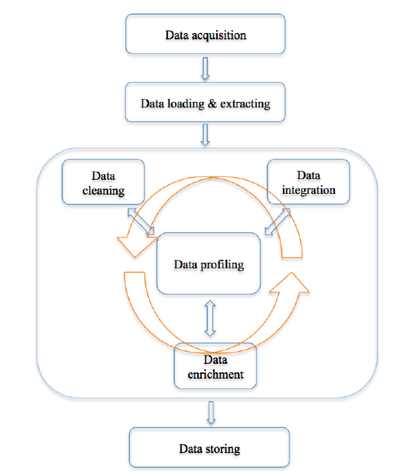

Introduction to Data Wrangling -- Reading
Definition points out that: (1)the ultimate goal of data wrangling is to make data useful, and (2)the output of data wrangling consists of both a clean data and an editable and auditable transcript of data manipulation performed. The transcript should also be reusable and could be potentially adapted to other similar datasets. In conclusion, real-world data is usually incomplete, dirty and inconsistent, and particularly there is a lot of it. Therefore, data wrangling techniques, in particular, automated techniques, are needed to improve the accuracy and efficiency of the downstream data analysis tools. "Current data quality problems cost U.S. business more than 600 billion dollars a year." "Between 30% to 80% of the data analysis task is spent on cleaning and understanding the data." Data cleaning: A set of operations that impute missing values, resolve, identify/remove outliers, unify data formats and so on. Data integration: A process of merging data from different sources into a coherent store. It often comprises resolving duplicated records, detecting conflicts in data values, finding redundant attributes values, schema matching, etc. Data normalisation and aggregation: Data normalisation is to adjust attribute values measured on different scales to a common scale, and data aggregation is to combine data from several measurements. Data reduction: It produces a reduced representation of the original data in volume via diverse techniques, e.g., feature selection, dimension reduction, instance sampling. Data discretization: Transforming numerical attributes into nominal attributes (part of data reduction but with particular importance in data preprocessing) is called data discretization. There are various techniques can be used to perform data discretization, such as binning methods, histogram analysis, clustering analysis, segmentation by natural partitioning, etc. 1. Data acquisition: Gather data from different resources, e.g., the web, sensors, and conventional databases via API requests (e.g., Twitter's API and Google API), web scraping (acquiring data from the Internet through many ways other than API access), etc. Tools used include various python package, pandas, R, etc. 2. Data loading & extracting: Load and parse data stored in many different formats, like XML, JSON, CSV, natural language text, etc. Tools used include, for instance, Beautiful Soup (http://www.crummy.com/software/BeautifulSoup/) (one of many python packages for parsing XML/HTML), regular expressions, NLTK (http://www.nltk.org/) (a python package for natural language processing). 3. Data cleaning:Diagnose and handle various data quality problems. As aforementioned, performing data cleaning we need a set of operations that impute missing values, resolve inconsistencies, identify/remove outliers, unify data formats and other problems discussed in "Why do We Wrangle Data?". 4. Data integration: Merge data from different 4. resources to create a rich and complete data set. It involves a set of operations that resolve related issues, such as data duplication, entity matching, and schema matching. 5. Data profiling:Utilises different kinds of descriptive statistics and visualisation tools to improve data quality. The data profiling process might uncover more data quality problems, and suggests more operations for data cleaning and data integration. 6. Data enrichment:Enrich existing data by feature generation, data transformation, data aggregation and data reduction, etc. After performing data cleaning and profiling, we now have a good sense of the data. Then we should think about what new kinds of data we can derive from the data we already have, or that we can merge from other related sources. 7. Data storing:Finally store the clean data in various formats, which are easily accessible by downstream analysis tools. 8. Documenting the process: Besides a cleaning script, we should also keep a detailed description of all data manipulations applied in the above tasks and generate a proper code book that describes each variable and its values in the clean data. 